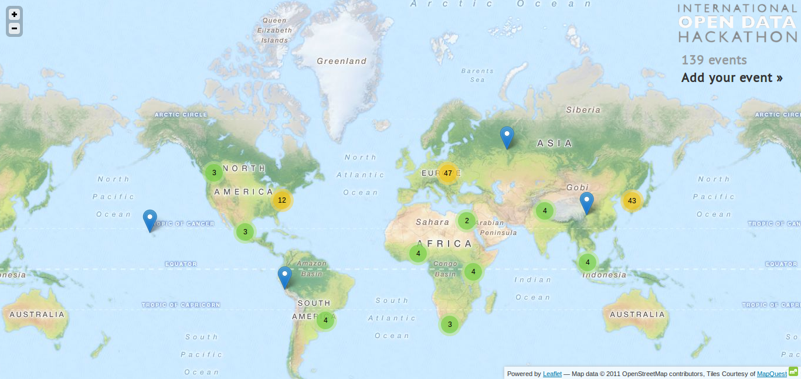
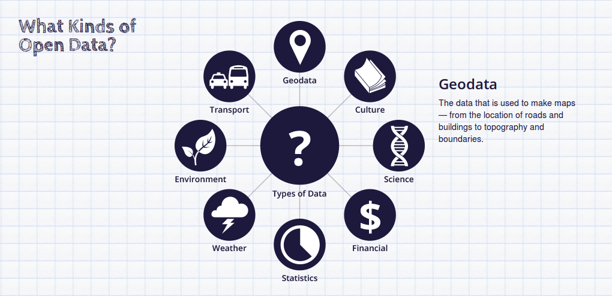
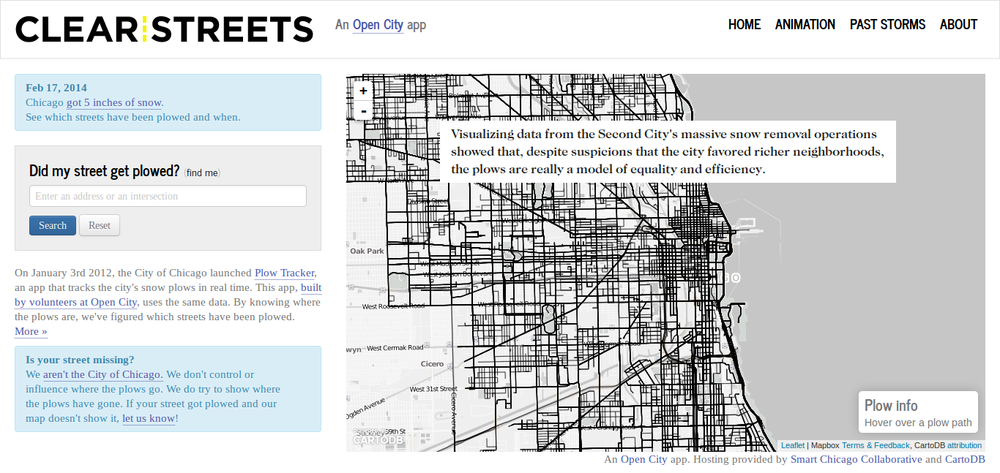
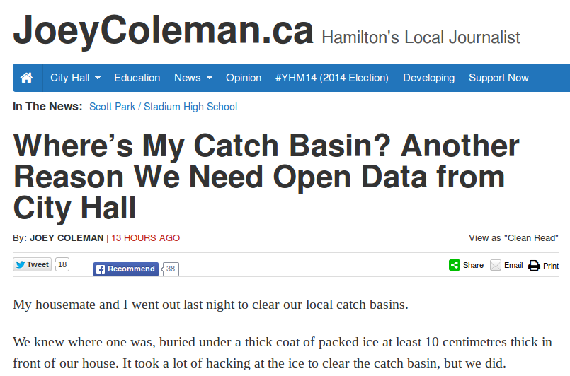

Welcome to Open Day Day!
hosted by Open Data Windsor Essex & Hackforge
Mita Williams, February 22, 2014
Ours is one of 139 events happening today around the world
What do we mean by Open Data?
“Open data is data that can be freely used, reused and redistributed by anyone – subject only, at most, to the requirement to attribute and sharealike.” Open Knowledge Foundation okfn.org
What do we mean by Open?
Allow me to paraphrase the formal definitions that exist
- It can be freely distributed and re-distributed
- It allows for universal participation
- It is in a format that is free of technological restriction
What do we mean by Data?
Why Open Data?
There are a variety of different motivations behind the Open Data movement.
I'll share five reasons for Open Data but please be aware that there are more than those.
1. Transparency
2. Releasing Commercial & Social Value
Some call this the government as a platform model. Such an approach allows services to be built on open data from *both* within and outside of government.
Open Data does not mean an advocacy for the replacement of government services. It cannot be a replacement for services such as the Canadian Census.
3. Helping Government do Better Work
One third of traffic to OpenDataBC's open data portal comes from within government.
4. Increasing Civic Engagment
Can open data efforts help bring citizen participation back into government processes and projects?
<5. For Reasons We Can't Even Predict

Today's Theme: Get Your Data on the Map!
Today's agenda
- P42 Systems will share their experiences using City of Windsor Data Catalogue
- Philip Aylesworth will introduce us to mapping using Google Fusion tables
- Mita Williams will give a brief explainer on web mapping and offer some mapping challenges
Anyone here have data or a map to share?
Thank you to the City of Windsor for their Open Data Catalogue

Thank you for sharing this day with us
This presentation is powered by reveal.js
and can be viewed online at http://copystar.github.io/odwe-odd14
and remixed from https://github.com/copystar/odwe-odd14
This presentation is cc-by